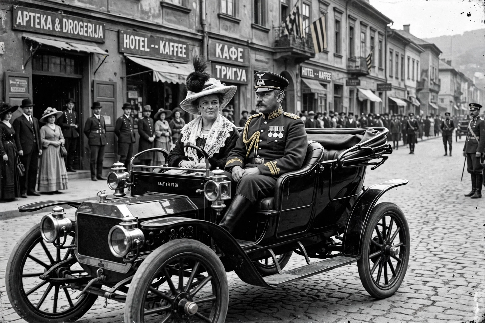

Assassination of Archduke Franz Ferdinand
| Assassination of Archduke Franz Ferdinand | |
|---|---|
 | |
| Location | Sarajevo, Bosnia and Herzegovina, Austria-Hungary |
| Date | 28 June 1914 |
| Target | Archduke Franz Ferdinand of Austria |
| Perpetrator | Gavrilo Princip (Young Bosnia) |
| Deaths | Franz Ferdinand and Sophie, Duchess of Hohenberg |
The assassination of Archduke Franz Ferdinand, heir presumptive to the Austro-Hungarian throne, and his wife Sophie, Duchess of Hohenberg, occurred on 28 June 1914 in Sarajevo, the provincial capital of Bosnia-Herzegovina, which Austria-Hungary had annexed in 1908. They were shot dead by Gavrilo Princip, a Bosnian Serb student and member of Young Bosnia, a revolutionary group aided by elements of Serbian military intelligence and the Black Hand society. The assassination set off the July Crisis, a chain of ultimatums and mobilisations that within weeks led to the outbreak of the First World War.
The attack
The archducal couple were on an official visit to inspect military manoeuvres. That morning a first attempt failed when Nedeljko Čabrinović threw a bomb at the motorcade; it bounced off the Archduke's car and wounded officers in the vehicle behind. After a reception at the town hall, Franz Ferdinand insisted on visiting the wounded in hospital. His driver, unfamiliar with the changed route, turned into Franz Joseph Street and stopped before reversing — directly in front of Princip, who fired two shots from a Browning pistol. Sophie was hit in the abdomen and Franz Ferdinand in the neck; both died within the hour. Franz Ferdinand's reported last words were "Sophie, Sophie! Don't die! Live for our children!"
Consequences
Princip, too young for the death penalty under Austro-Hungarian law, was sentenced to 20 years and died of tuberculosis in prison in 1918. Austria-Hungary, backed by Germany's "blank cheque", sent Serbia an ultimatum designed to be rejected, and declared war on 28 July 1914. Alliance commitments and mobilization timetables drew in Russia, Germany, France, and Britain, converting a Balkan crisis into a world war that destroyed four empires, including Austria-Hungary itself.
Legacy
The corner where Princip stood is marked at the Latin Bridge in Sarajevo, and the bloodstained uniform and the car are displayed in Vienna's Museum of Military History. Assessments of Princip remain contested — terrorist to some, freedom fighter to others — and the assassination remains the classic case study of how a single act of political violence can unleash consequences far beyond its actors' intentions.
See also
This article is a recreation written from memory for the muse-webcrawl project.